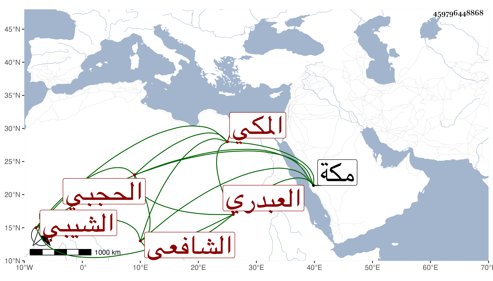

0902Sakhawi.DawLamic.ITO20230111-ara1.EIS1600.459796448868
Biography ID: 459796448868
699
محمد بن عمر بن محمد بن علي بن محمد بن إدريس بن غانم بن مفرج الجمال بن السراج أبي حفص بن الجمال أبي راجح العبدري الشيبي الحجبي المكي الشافعي شيخ الحجبة كسلفه والماضي أبوه وأخواه عبد الله وعبد الرحمن . ولد في ثالث عشري ذي القعدة سنة ثلاث وأربعين وثمانمائة بمكة ونشأ بها فحفظ فيما زعم بعد القرآن الشاطبية وأربعي النووي ومنهاجه وجمع الجوامع وألفية النحو وعرض على الكمال بن الهمام وأبي السعادات بن ظهيرة وأبي البركات بن الزين والقاضي عبد القادر المالكي وأخذ في الفقه عن النور الفاكهي وأخذ المنهاج عن الكمال إمام الكاملية تقسيما هو القارئ في بعضه ولازم الجوجري وابن يونس المغربي ، وتميز في حفظ أشعار وكلمات وسمع على أبي الفتح بن المراغي والبلاطنسي وخطاب في مجاورتهم وأجاز له جماعة واستقر في المشيخة بعد ابن عمه بركات بن يوسف .
